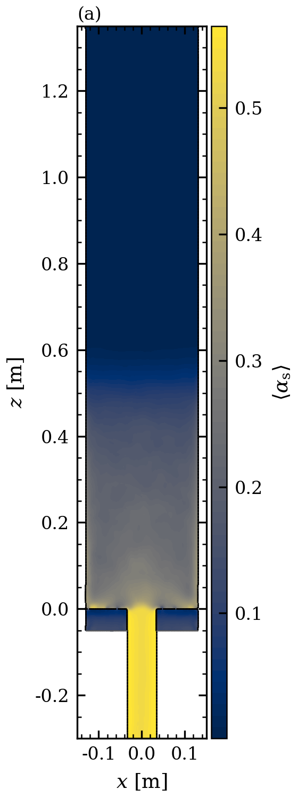

把几天几夜的 CFD，
交给一个不会掉线的智能体。
CFDriver4MTO 从论文出发，自己建几何、划网格、提交求解，再守着作业一直跑到出结果。服务重启、模型断线、浏览器关掉，求解都不会停。


时均固含率，y = 0 剖面（本次复现实算）为什么需要它
通用编程智能体会写脚本，
但守不住一个要跑三天的算例。
反应流化床一个工况动辄几十小时。真正耗人的不是写配置，而是盯作业、处理中断、判断结果能不能信。
求解和对话分开
作业脱离智能体进程运行，登记在原子写入的索引里。服务重启后自动接管仍在跑的 MPI 作业。
断线后接着干
有界退避重试，之后每 5 分钟保活，通路恢复就从中断那一步继续。真实的 503 → 重启 → 自动恢复已完整跑通。
结论要有证据链
生成、网格、求解、测量四阶段全部记哈希，指标由独立进程重算复核，通过物理验收才登记。
01 · 过程看得见
每个作业跑到哪、还要多久，一眼就知道。
实时监视页每 15 秒刷新一次：模拟时间、速率、预计剩余、Courant 数，再加上日志尾部。
- 手动起的作业也会被发现，自动纳入监视
- 核数预算：提交前检查空闲核，不会超配
- 危险命令仍然等人确认，自动续推不越过审批
02 · 能直接放进论文的图
后处理出来就是出版质量。
平面精确切割多面体单元，贴体网格的壁面就是真实边界，不是方块台阶。衬线字体、LaTeX 符号、300 dpi。
- 时均场：在统计窗内逐时刻平均
- 任意截面：x / y / z 切片，色图与范围可调
- 与原文同口径：采样线、截面高度对齐论文图号

本次复现的时均场：(a) 固含率 (b) C₂H₄ (c, d) Z = 0.06 m 截面。智能体生成，未重画。
03 · 从论文尺寸到网格
几何按原文尺寸建，误差 −0.042 %。
主筒壁面贴体误差 p95 只有 0.039 mm（网格尺度 3.5 mm）。工作台里能直接打开三维几何，按边界区着色、剖切检查。
- 论文给定的参数被锁定：开孔率、进料、物性搜索时改不了
- 检验用观测量单独封存，防止对着答案调参

实测结果
出口指标对上了。没对上的，也写在表里。
中试 DMTO 流化床，三维欧拉双流体，8 组分集总反应。下面的数字都来自时均窗口内的实算。
| 指标 | CFDriver4MTO | 原文 CFD | 结论 |
|---|---|---|---|
| 乙烯 + 丙烯选择性 SC2+C3 | 80.71 % | 80.69 % | +0.02 pt |
| C₂H₄ / C₃H₆ 比 | 1.205 | 1.210 | −0.38 % |
| Z = 0.4 m 径向分布 | 平坦 | 平坦 | 一致 |
| Z = 0.06 m 截面 min / 壁面值原文 Fig. 12b 的中心凹陷 | 0.962 | 0.487 | 未复现 |
| 反应基本完成的高度原文 Fig. 12a | 0.11 m | ≈ 0.2 m | 偏早 |
| 和通用编程智能体的同模型对比 | — | — | 进行中，录屏 |
细网格（1.98 M 单元）复算和分布器反演正在跑，用来攻 Fig. 12b。结果出来前不写“完整复现”。
04 · 分布器反演
论文只给了开孔率 5 %，
布孔让 CFD 自己反推。
孔数、孔径、位置原文都没写。大模型提出候选布孔，CFD 打分，代理模型用真实结果持续校准，全程无人值守。
- 提议读历史档案，写一个只能 import math 的布孔函数
- 筛查沙箱执行，查开孔率与制造约束，代理模型排序
- CFD四阶段证据链，24 核，约 11 小时一个
- 接受改进必须超过两倍时均窗口噪声
- 校准每 3 个真实结果校准代理，评估器本身不动

211 孔基准在流水线上的复核报告。基准必须先跑回参考值（容差 0.05），否则搜索自动停止。
想在你的算例上试试？
CFDriver4MTO 基于开源的 NullFlux 构建，目前小范围试用。在 NullFlux 仓库开一个 issue，说说你的算例。